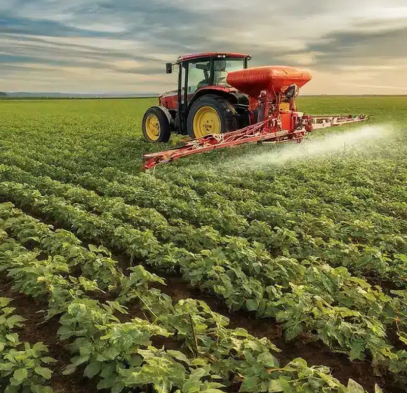

¿Qué encontrás
en Solanum?
Combinamos nutrición vegetal, protección de cultivos y conocimiento en campo para que cada recomendación responda a las necesidades reales de tu producción.
Nutrición
vegetal
Desarrollo y rendimiento
del cultivo
- Fertilizantes de precisión
- Soluciones bioestimulantes
- Corrección de suelos
Protección
de cultivos
Control sanitario y prevención
- Manejo de malezas
- Control de plagas
- Respaldo técnico

Planes a
medida
Estrategias según tu terreno
- Diagnóstico de suelo
- Dosificación eficiente
- Formulación personalizada
Acompañamiento
en campo
Monitoreo y presencia en finca
- Seguimiento continuo
- Monitoreo en lote
- Asesoramiento permanente
Marcas que respaldan nuestras soluciones
Trabajamos con empresas líderes en nutrición vegetal e insumos fitosanitarios, eligiendo la alternativa más adecuada para cada necesidad.


EL PRODUCTO ES SÓLO UNA PARTE DE LA SOLUCIÓN
Potenciá el rendimiento
de tu campo
Combinemos insumos de calidad, criterio agronómico y presencia directa durante toda la campaña.
 HABLAR CON UN INGENIERO
HABLAR CON UN INGENIERO